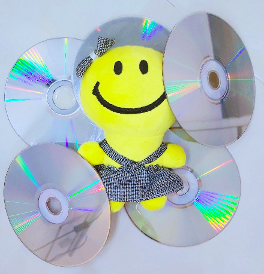

مغازه سی دی فروشی (Factory method)
این هفته هپولی توی کلاس AP با کلاس انتزاعی و توابع مجازی آشنا شده ولی دقیق نمی دونه که چقد استفاده از اینا می تونه کمکش کنه.
بعد از کلاس میره مغازه سی دی فروشی ای که عموش تازه باز کرده. عموش ازش می خواد اطلاعات سی دی های مغازشو مرتب یه جا داشته باشه و به راحتی بتونه بهشون دسترسی داشته باشه.
حالا هپولی مونده و کلی سی دی مرتب نشده!! 
محتوای سی دی ها میتونن فیلم سینمایی (Movie) و یا سریال(Series) باشن و فیلم ها قابلیت اجاره گرفتن دارن. پس یه کلاس CD داریم که عضو های داده ای نام اثر (name)، کارگردان اثر (director) و مدت زمان به دقیقه (duration) داره. دو کلاس Movie و Series از کلاس CD ارث میبرن.
در کلاس Movie عضوهای داده ای release_year و language و rented رو داریم. همچنین چهار تابع عضو زیر هم وجود دارن:
- تابع setdata : وظیفه ی گرفتن تمام اطلاعات فیلم سینمایی شامل نام اثر، کارگردان، مدت زمان، سال انتشار، زبان فیلم و قابلیت اجاره گرفتن رو داره.
- تابع showdata : وظیفه ی نمایش تمام اطلاعات فیلم سینمایی رو داره.
- تابع rentMovie : با صدا زدن این تابع نشان می دهیم فیلم اجاره داده شده.
- تابع returnMovie : با صدا زدن این تابع نشان می دهیم فیلم به مغازه بازگردانده شده.
در کلاس Series دو عضو داده ای season و episode رو داریم. همچنین دو تابع عضو زیر هم وجود دارن:
- تابع setdata : وظیفه ی گرفتن تمام اطلاعات سریال شامل نام اثر، کارگردان، مدت زمان، فصل و قسمت رو داره.
- تابع showdata : وظیفه ی نمایش تمام اطلاعات سریال رو داره.
حالا به هپولی کمک کنید که این کلاس ها رو بهینه پیاده سازی کنه جوری که از کلاس انتزاعی، توابع مجازی ،فکتوری متد و داینامیک کست استفاده بشه. همچنین شما می توانین عضو های داده ای بیشتری در کلاس ها بنابر نیاز ایجاد کنین.
ورودی :🔗
خط اول ورودی تعداد شی هایی است که می سازیم سپس درصورتی که کاربر در خط بعدی عدد 1 را وارد کرد به معنای ساخت شئی فیلم سینمایی، درصورتی که 2 را وارد کرد به معنای ساخت شئی سریال است.
بعد از وارد کردن نوع شئی در خط بعدی موارد مورد نیاز هر شئی از کاربر گرفته می شود . برای مثال برای فیلم سینمایی به ترتیب نام اثر، کارگردان، مدت زمان، سال انتشار و زبان فیلم گرفته میشه و یا در صورتی که سریال بود به ترتیب نام اثر، کارگردان، مدت زمان، فصل و قسمت گرفته میشه.
سپس در q خط بعدی به ترتیب شماره سی دی و اجاره گرفتن (1) و یا پس دادن را (0) آن را ورودی می گیریم.
خروجی :🔗
ابتدا به ترتیب اطلاعات تمامی CD ها را بستگی به نوع شئی ها خروجی می دهیم.(اطلاعات با یک اسپیس فاصله) سپس به تعداد query ها به شکل زیر خروجی می دهید:
- فیلم قبلا اجاره گرفته شده بود و در دسترس نیست عبارت "Not Returned Yet"
- با موفقیت اجاره داده شد عبارت "Rented Successfully"
- با موفقیت پس داده شد "Returned Successfully"
- در غیر این صورت "ERROR"